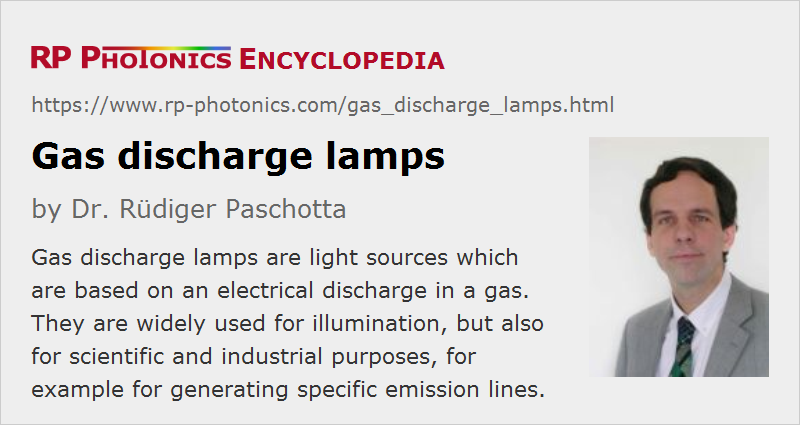

Gas Discharge Lamps
Definition: light sources which are based on an electrical discharge in an ionized gas or metal vapor
More specific terms: arc lamps, flash lamps, fluorescent lamps, metal vapor lamps, metal halide lamps, high intensity discharge lamps, spectral lamps, mercury vapor lamps, excimer lamps, neon lamps, krypton lamps, xenon lamps, sodium vapor lamps
German: Gasentladungslampen
Category: non-laser light sources
How to cite the article; suggest additional literature
Author: Dr. Rüdiger Paschotta
Gas discharge lamps are light sources which are based on an electric discharge in an ionized gas or metal vapor. Some of them have already been used from the second half of the 19th century on, while others were invented much later. The technology has in some areas been substantially developed further in recent decades. There is now a very wide range of discharge lamps available, with essential parameters like output power and pulse durations varying by orders of magnitude.
Basic Operation Principles
Essentially, the operation principal of any gas discharge lamp involves that gas atoms or molecules are transferred into excited electronic states by impinging electrons, or alternatively by energy transfers from other gas atoms, ions or molecules. Subsequently, the excited species emit luminescent light, which is frequently either in the visible spectral range or in the ultraviolet, but sometimes in the infrared.
The excitation current through the gas is in most cases applied with two electrodes, which are typically placed at two opposite ends of a glass tube containing the gas. For DC operation, i.e., with a constant direction of current, one electrode is the cathode (the negative one, emitting electrons into the gas), and the other one is the anode (collecting electrons). For AC operation, the electrodes alternatingly fulfill both functions. In some cases, one has an additional electrode for ignition, which is not used during continuous operation. Somewhat surprisingly, the ignition electrode (trigger electrode) may even be placed outside the glass envelope.
There are also electrode-less lamps, where the electric energy is introduced in other ways, typically with a radio frequency or microwave field. While that approach normally leads to higher construction cost, it usually allows for particularly long lamp lifetimes, since the typical degradation at the electrodes is avoided.
In high pressure lamps, operated with high current densities and high gas temperatures, there can be also significant amount of thermal radiation, i.e., not only luminescence.
There are also lasers exploiting gain (light amplification) in gas discharges – for example, helium–neon lasers, CO2 lasers and argon ion lasers. These, however, are not called lamps.
Electrical Characteristics
The electrical impedance of an arc lamp or flash lamp is not simply a constant number; it depends very much on the driving conditions and the state of the lamp.
Before ignition, i.e., without any significant ionization, the impedance of such a lamp is extremely high, leading to a negligible electric current when simply applying the voltage which would be sufficient during operation.
For conducting an electric current, the gas must be ionized (at least to some degree, normally below 1%). Upon startup, that must be achieved by applying an electrical voltage which is sufficiently high for ignition, often using an auxiliary electrical circuit. The required ignition voltage and operation voltage depend on the gas pressure and on the type of gas. (For high fill pressures, triggering can be a challenge.) During normal operation, ionization of the gas is maintained by the flowing current. That works only for high enough current densities, which implies that gas discharge lamps can generally be dimmed only to a limited extent, if at all.
When starting with a low lamp current after triggering the discharge, the impedance of the plasma rapidly decreases with increasing current, because that increases the degree of ionization. In that regime, the discharge exhibits a negative differential resistance: an increase of current does not increase the voltage drop, but rather decreases it because of the increased degree of ionization. For operation with a constant drive voltage, that behavior would be potentially catastrophic, since the lamp current could rapidly and strongly grow.
For higher lamp currents, as usually used in many arc lamps, the differential resistance becomes positive. The lamp voltage may grow in proportion to the square root of the current; that frequently observed behavior led to the definition of the impedance parameter K0, which determines the lamp impedance according to R = K0 I−1/2. The voltage drop is then U = R I = K0 I1/2. Note, however, that the impedance parameter K0 cannot be considered as a device constant. For example, it grows substantially in the low current regime, where the lamp current remains limited to a small cross section, not yet being limited by the lamp envelope (wall-stabilized). The impedance is also substantially time-dependent in non-stationary situations as encountered e.g. in flash lamps.
For arc lamps, one often applies a more sophisticated startup method, where one starts with a relatively low energy high-voltage trigger pulse and then applies a lower-voltage higher-energy booster pulse before the main power supply for continuous-wave operation can take over. Without the booster, the impedance would not have been sufficiently reduced.
Due to the need of triggering, possibly also boosting and because of the negative differential impedance in certain regimes, most gas discharge lamps cannot be operated simply by applying a constant voltage, as one would normally do with an incandescent lamp, for example. Instead, they require a more or less sophisticated kind of electrical circuit for triggering and current control. It depends very much on the type of operation (continuous-way for pulsed), further details of the operation parameters and lamp type what kind of electric circuit is appropriate.
Gas discharge lamps are often operated with direct current (DC), which has various advantages over alternating current (AC) mode. In particular, each electrode has a well defined function (cathode or anode) and can be optimized accordingly. Also, one avoids the risk of using the ionization in the times where the AC current changes its sign.
However, there are important exceptions, where AC operation is possible and has the advantage of lower complexity of the electrical drive circuit. As an example, Figure 1 shows a typical electrical circuit used for operating fluorescent lamps, which can be used for some other gas discharge lamps as well. The starter contains a tiny discharge lamp, which in contrast to the fluorescent lamp can start with line voltage. It heats up a bimetallic switch, which eventually short-circuits it. One then obtains a much higher current through the filaments of the fluorescent lamp, which prepares the lamp for ignition. That occurs when the bimetallic switch opens again after cooling down. The resulting voltage peak is normally sufficient for ignition, unless the opening of the starter comes at an inconvenient time during the AC cycle; the process may then have to be repeated.

Modern electronic circuits more and more replace such simple arrangements and have various advantages, such as quicker and more reliable starting, substantially lower lifetime reduction at startup, higher energy efficiency, and avoiding humming sounds of ballasts.
For many gas discharge lamps, particularly when using simple kinds of electrical drivers, ignition may take some time, may not be utterly reliable (sometimes requiring more than one ignition attempt) and generally tends to reduce the lamp lifetime e.g. by degrading electrodes. With modern electronics, lamp performance can be substantially enhanced. It is nowadays no problem to provide a low-noise well regulated DC drive with high power efficiency, and to achieve fast and reliable ignition.
Lamp Envelopes
In nearly all cases, a gas discharge lamp requires a kind of transparent enclosure for keeping the gas separated from the ambient atmosphere; the only notable exception is the traditional carbon arc lamp, working with air at atmospheric pressure.
The envelope is usually realized as a sealed glass container (often in the form of a cylindrical glass tube with a bore diameter of a few millimeters) which is penetrated by the electrode wires. The electrical feedthrough can be a critical aspect since the thermal coefficient of expansion is quite different between common wire materials and the glass. Therefore, one sometimes needs to use different metals for a feedthrough and an electrode, which are soldered together for getting a good electrical contact.
A lamp envelope should be well transparent for the emitted light, mechanically sufficiently stable for high reliability and resistant to the experienced temperature changes, the gas pressure and to the applied gases or vapors. For some lamps, quite ordinary glasses (e.g. borosilicates) are sufficient for that purpose, while special requirements arise in some cases. For example, one may require high UV transmission, where most glasses would exhibit strong absorption; synthetic fused silica can then be a solution, which is also fairly good concerning its high thermal shock resistance. Note that it is common to say that quartz envelopes are used, but this is misleading, since what is meant is then fused silica, also called fused quartz, which is silica glass rather than a crystalline material like natural quartz.
In some cases, e.g. for high pressure sodium vapor lamps, special envelope materials are required which can withstand the extreme chemical reactivity of the used vapor. For example, there are translucent aluminum oxide ceramic envelopes.
In other cases, one uses fused silica (“quartz”) with some dopants for introducing UV absorption, because intense ultraviolet light would be detrimental; it could damage parts of an application setup (e.g. plastics, seals and laser crystals) and could also cause disturbing ozone generation from ambient oxygen. In that way, one can produce “ozone-free” lamps.
The thermal shock exposure of a lamp tube can in principle be reduced by making it larger (avoiding close proximity to the discharge). However, a rather compact tube is often desirable for various reasons, such as easier collection of the light output and avoiding dark depositions on the glass for too low operating temperatures.
Envelopes for low pressure lamps often have a simple cylindrical form. For some applications, bent shapes are required, e.g. a U shape, a near circle or a helical shape. Also, one can produce bent tubes in the forms of letters and other symbols, e.g. for advertising signs. Early lamp-pumped lasers used lamps would around laser rods; it later turned out that this shape is not necessarily advantageous.
Particularly for arc lamps, it can be advantageous to minimize the “dead volume” at the electrode ends. This is related to the use technique for producing the electrode feedthrough.
While some discharge lamps simply have an electrode on each end, others have pins on one side only, which fit into some standardized socket. There is a wide range of different sockets, adapted to different operation voltages and powers.
Electrodes
Various details of electrodes can have a substantial impact on the lamp performance and lifetime. Some important aspects are briefly explained in the following:
- Cathodes should have a low work function (i.e., easily emit electrons) for minimizing the required voltage and maximizing the efficiency. Therefore, one often uses specially treated metals. For example, one may produce a porous tungsten matrix and impregnate it with barium or some other material with low work function.
- Electrode shapes can be quite important. For example, pointed cathodes can provide a well defined position of the discharge in the center of the tube; it is important to avoid that the discharge comes too close to the envelope, because that could lead to rapid degradation. Further, stronger heating of such a cathode tip for good thermionic emission is generally welcome for arc lamps; note that the power density in continuous-wave operation is not that high. For pulsed operation with high peak currents, a rounded shape can be better, distributing the load over a larger area.
- The electrodes of high-power lamps (particularly anodes) needed to be specially cooled during operation – sometimes even with a water flow. It is of course not easy to develop a reliable lamp construction, ensuring good heat flow while avoiding any leaks and insulation issues.
- It must be ensured that the electrical feedthroughs do not lead to any leaks. This is not always easy, for example due to substantial discrepancies of the thermal expansion coefficients between glass and electrode metals. Different kinds of seals have been developed, in particular solder seals, ribbon seals and rod seals. In the latter case, for example, a thick electrode rod is sealed with glass such that one obtains a tight connection. One sometimes needs to use a softer special seal glass which itself needs to be fused with the actual envelope glass (and may unfortunately make the device less temperature-resistant). Rod seals can be a robust solution, also allowing high peak currents in flash lamps, if they do not get too hot.
Lamp Power Supplies
Generally, power supplies for gas discharge lamps are somewhat more complicated than those for incandescent lamps, for example:
- Although the differential resistance of the discharge is not necessarily negative in the intended operation point, the lamp impedance is a quite variable quantity, and the power supply must somehow stabilize the operation current rather than the applied voltage. Some kind of electrical ballast is required for current stabilization – in simple cases with AC operation, it can be an inductive ballast, otherwise some more sophisticated (but often more compact and possibly even cheaper) electronic solution.
- For startup, one generally requires a high-voltage trigger pulse, and sometimes an additional booster pulse.
Types of Gas Discharge Lamps and Their Applications
There is a wide range of gas discharge lamps, which can greatly differ in various aspects like the used gas, the gas pressure, the type of electric discharge, the operation mode (continuous or pulsed), and details of the electrodes. Names for specific types of lamps can refer to different such aspects; for example, a neon lamp indicates that a discharge in neon gas is used (possibly with added other gases), a glow lamp is recognized to work in the glow discharge regime, a high pressure lamp obviously uses a relatively high gas pressure, and a flash lamp is used for producing light pulses.
In the following sections, distinctions of lamps according to different criteria are explained. Of course, those categories are overlapping.
Geometric Shapes
Gas discharge lamps are available with different geometrical shapes:
- There are linear lamps, based on a cylindrical glass tube with electrodes at the ends.
- The tubes may also be bent to obtain other shapes such as a U, a ring or a helical shape.
The sizes can be quite different, for example there are linear long-arc lamps with a length of several tens of centimeters or even more, while compact helically shaped tubes may have a diameter of only a few centimeters. Some lamps are optimized for approximating point sources, using a small distance between pointed electrodes.
Used Gases and Metal Vapors
A wide range of gases is used in gas discharge lamps, depending on the required emission spectrum, optical output power and radiance. That includes noble gases like neon, helium, argon, krypton and xenon as well as various molecular gases like hydrogen, deuterium, nitrogen, oxygen or carbon diode. In other cases, one uses metals such as mercury, sodium, potassium, rubidium, cesium or some metal halides, which are largely evaporated only during operation; such lamps are called metal vapor lamps and metal halide lamps. The evaporation of the metal or metal halide may be caused by a discharge in an additional starter gas, e.g. xenon.
The naming is sometimes misleading; for example, some cars are said to be equipped with xenon lamps, although in reality they are actually metal halide lamps also containing some xenon as starter gas, which also provides some light output before the full luminous flux from the halides is reached. There is also a common tendency to avoid the mentioning of the poisonous mercury.
In many cases, a gas discharge lamp uses a suitable mixture of different gases which allows one to achieve the desired operation characteristics e.g. in terms of optical spectrum, luminous efficacy, radiance and ease of ignition. For example, one may exploit energy transfer processes between different species. Some auxiliary gasses, used to improve the performance in some respect, may not be mentioned by suppliers, perhaps even kept secret.
A special case are excimer lamps, where excited dimers are formed in the gas discharge, and those produce UV light upon dissociation.
Note that the emission spectrum can also substantially depend on the operation conditions, particularly on the applied current density and the resulting plasma temperature.
Glow Discharge vs. Arc
The operation parameters of discharge lamps can vary greatly concerning essential parameters like gas pressure, temperature and current density. This leads to different regimes of operation:
- A glow discharge is characterized by a relatively low temperature (e.g. near room temperature), typically associated with a small current density. Due to a moderate degree of ionization, the impedance of the gas is relatively high, i.e., one requires a substantial operation voltage while the electrical current density is low. Free electrons and ions are generally far from a thermal equilibrium: the average energy of electrons is much higher than those of ions, because they can be accelerated with a long mean free path length.
- An arc discharge is operated in a regime with substantially increased temperature (thousands of degrees Celsius), and typically with a relatively high power density and gas pressure. In contrast to a spark, it is maintained over substantial times (not just for a few microseconds). Due to the high degree of ionization, an arc has a low impedance, i.e., it is operated with high current density, but relatively low voltage (for example a few tens of volts). Electrons have a short mean free path length and are therefore largely in thermal equilibrium with the ions – one has a thermal plasma.
Accordingly, one can categorize lamps as glow discharge lamps and arc lamps. However, the term arc lamp is also often used for lamps which actually operate in the glow discharge regime; arc is then meant to emphasize continuous operation in contrast to pulsed operation with a spark; details of the physics of the discharge are then largely ignored. (Ironically, flash lamps, operated with high peak currents, are more likely to get into the arc regime in terms of high power densities.) Flash lamps are often based on noble gases like neon, argon, krypton and xenon, while arc lamps can also involve metals and metal halides.
Typical glow discharge lamps are tiny low-power signal lamps containing neon or a gas mixture. Some tiny low pressure cold cathode neon lamps, also called neon glow lamps, are still widely used for signal applications. They do not require a special starting circuit, but only a simple series resistor, which is sometimes integrated into the lamp. They require a substantial operation voltage (tens to hundreds of volts), but only a rather small current, and are reasonably efficient. They are used in electrical switches, for example, for indicating the “on” state, or elsewhere just to indicate that line voltage is available. For operation at line voltage, they are substantially more economical than LED solutions. Also, they are useful for voltage testers and can even indicate the polarity of voltage, because the light emission is mostly located around the cathode. In earlier times, such lamps were also used in the form of alphanumerical displays, before those were largely replaced with devices based on light-emitting diodes.
Glow discharges can also produce substantial optical powers, but due to the low power density one then requires a large emitting volume, which leads to a very low radiance. That is fully acceptable or even advantageous for illumination (lighting) purposes, for signal lights (e.g. for advertising), but not e.g. for projection displays or search lamps, where a well directed light beam needs to be generated.
Traditional arc lamps have basically always been carbon arc lamps, where graphite electrodes were operated in air. Here, the arc is very hot (with temperatures of thousands of degrees Celsius), and rather bright white light is generated with a substantial power density. Due to their relatively poor luminous efficacy and short lifetime of the graphite electrodes, and also because of the rapid contamination of nearby optical elements, carbon arc lamps have become largely obsolete. For more details, see the article on arc lamps.
A modern replacement of carbon arc lamps are xenon arc lamps, also having a relatively short arc with a length of typically a few millimeters, but in that case surrounded by a fused silica tube. The power density is also quite high; an electrical power between some tens of watts and many kilowatts is converted in a relatively small volume, leading to a very high operation temperature of the arc and to emission with a relatively high radiance – suitable for high-power projection displays (in cinemas and beamers) and directed search lights, for example. Such lamps belong to the category of high pressure discharge lamps, as further discussed below.
Cold and Hot Electrodes
Some gas discharge lamps (hot cathode lamps) require high temperatures of the electrodes, at least of the cathode (for operation with DC current), because only then one obtains sufficiently strong thermionic emission of electrons into the gas. That can be achieved in high pressure lamps (see below) by operation with high enough power density. In other cases, the electrodes are filaments, somewhat similar to those as used in incandescent lamps; they can be heated with an electrical current to the required temperature. Often, for example in ordinary fluorescent lamps, one uses active heating mostly for startup; the lower filament current during normal operation leads only to weak heating. The thermionic emission may be enhanced with a thin oxide coating on the metallic electrode.
There are also cold cathode lamps where the electrodes can be relatively cool, and field emission is exploited. The required ignition voltage may then be substantially higher. Such lamps have been widely used in flat panel displays, before they have been largely replaced with light emitting diodes (LEDs).
Continuous and Pulsed Light Emission
Many gas discharge lamps are designed for continuous operation. Often it is recommended to avoid frequent switching, because that can degrade their lifetime. The continuous emission often leads to the naming as arc lamps even if the physical operation parameters actually indicate the glow discharge regime.
Some lamps are made for pulsed emission, and many of them can be used only in that operation mode. For example, some flash lamps are used for pumping of pulsed (free-running or Q-switched) solid-state lasers (→ lamp-pumped lasers). Such lamps often need to emit relatively short pulses with durations of e.g. well below 1 ms. Other flash tubes are used as flashlights for photography or for certain signals, or as strobe light for stroboscopes.
Due to the very limited available time for starting the discharge, flash lamps cannot utilize materials which would first have to be evaporated. Therefore, they are often based on simple gases like xenon.
Usually, flash lamps have a relatively large emitting volume in order to achieve sufficiently high pulse energies. The required high electrical peak current may be provided by a capacitor mounted close to the lamp.
Low Pressure Discharge Lamps
A low pressure discharge lamp uses a discharge in a gas at relatively low pressure, often far below atmospheric pressure. In that regime, the rate of collisions between the atoms, ions or molecules of the gas is relatively low, so that the light emission remains relatively undisturbed by such effects. As a result, the optical spectrum of the generated light is usually a line spectrum, i.e., it consists of discrete spectral emission lines (resulting from bound-to-bound transitions) rather than a broad continuum (involving free electrons). Sometimes, there are only a few lines in a specific spectral regions, while in other cases (e.g. xenon) one obtains a wide range of lines throughout the visible region and including the ultraviolet.
Due to the relatively small density of the gas, one needs to use a substantial gas volume for obtaining a certain optical power, and the resulting radiance is quite small.
The operation temperature of the gas and electrodes usually remains rather small, and the same holds for the applied current densities. Therefore, lamp lifetimes of many thousands of hours are often achieved. The discharge is usually in the glow discharge regime.
Various low pressure discharge lamps are suitable for lighting purposes; that holds particularly for fluorescent lamps based on mercury vapor and a phosphor. Low pressure lamps based on noble gases, emitting light in different colors, are mostly used in advertising installations. It is often exploited that the gas tube does not need to be straight, but can be bent to form letters or other symbols.
Some amount of flicker (variations of limited power and its spatial distribution) is frequently observed due to instabilities of the gas discharge. It is often unwanted and minimized through proper design. In a few cases, one uses flicker light bulbs with an orange color tone, which somewhat mimics the emission of candles.
Low pressure mercury vapor lamps are widely used for generating ultraviolet light, for example for industrial processes with UV curing or UV lithography, or for the sterilization of water. For many of those applications, the large emitting volume is not problematic.
Neon glow lamps as a typical example for low pressure signal lamps have already been mentioned above.
The quasi-monochromatic emission of some low pressure lamps makes them useful as spectral lamps for applications in spectroscopy, for example
- for fluorescence spectroscopy (often with UV excitation)
- for certain interferometers, e.g. Fizeau interferometers
- for the calibration of spectrometers at certain standard spectral lines
Often, one uses them in conjunction with an interference filter, a bandpass filter for transmitting only one specific emission line.
High Pressure Discharge Lamps
In high pressure discharge lamps, the applied gas pressure may still be below atmospheric pressure, e.g. at a few hundred millibars, which is however quite high compared with low pressure lamps. In other cases, one uses much higher pressures, e.g. several or even tens of atmospheres. Those lamps are mostly based on metals (e.g. mercury or sodium) or metal halides.
Note that the operation pressure can significantly exceed the fill pressure, because the temperature may rise substantially due to the intense discharge. That pressure rise may be reduced by any dead space in the lamp, e.g. besides our behind the electrodes.
The high operation pressure has two particularly important consequences for the performance:
- Due to the higher rate of collision processes, which lead to lifetime broadening of the emission, the emission spectrum is usually quite broad and smooth (a continuum), although it may still contain some broadened spectral lines.
- Due to the resulting high density of gas atoms, ions or molecules, one can obtain a substantially higher light output per unit volume, and accordingly a much higher radiance, as required for some applications like projection displays.
Further consequences are a high operation temperature of the discharge, which together with the high density implies that one is operating in the arc regime. The electrodes are also operated with high current densities, exposed to high temperatures and the bombardment with electrons and/or ions; due to those harsh conditions, the lamp lifetime is often (but not always) not that long – in some cases, only a few tens of hours.
High pressure lamps (e.g. with krypton or xenon at multiple atmospheres) are also used for pumping of continuous-wave or pulsed (free-running or Q-switched) solid-state lasers (→ lamp-pumped lasers), where the light output of low pressure lamps would normally be insufficient. Although lamp-pump lasers have been replaced with diode-pumped lasers in many areas, they remain superior, at least in terms of cost, particularly for some applications requiring high pulse energies in combination with moderate pulse repetition rates. Their disadvantage in terms of power conversion efficiency is not always very relevant in such cases.
Some lamps are optimized for particularly high volumetric emission densities; they are called high-intensity discharge lamps (HID lamps). They are available with operation powers between some tens of watts and tens of kilowatts. The light emitting volume can often be kept very small, for example of the order of a few mm3, or sometimes even below 1 mm3. The operation temperature of the gas (e.g. mercury, some halides and xenon) and the electrodes is generally quite high. One therefore often uses tungsten electrodes, being particularly resistant to high temperature, and which are possibly treated for more efficient electronic mission. The glass may also reach temperatures around 900 °C. The emission spectrum can be quite broad and smooth, and the luminous efficacy can be around 100 lm/W or even higher. A problematic aspect is the substantial content of the poisonous mercury, which is sometimes released into the environment when a lamp explodes – which is not a rare event due to the harsh operation conditions with high temperature and pressure. An additional housing may be used during transport (before and after actual use) and can protect against injury by flying debris, but not necessarily against mercury contamination. The handling of such high pressure lamps require special precautions to minimize safety hazards; for high-power versions (e.g. in cinema projectors), one may require a full body protection.
There are also high pressure mercury lamps generating ultraviolet light for applications like photolithography. Here, one again requires a high radiance and thus a high volumetric density of the light emission, as can be achieved only with high pressure lamps.
High pressure sodium vapor lamps, operated at more moderate pressures and also containing some mercury, can reach quite quite high luminous efficacy (although not as high as four low pressure sodium lamps) and long lifetimes. Compared with low pressure lamps, they exhibit a smoother optical spectrum, but still basically a yellow appearance, which is sometimes accepted for industrial lighting and plant growth but would normally not be considered as suitable for indoor lighting.
Fluorescent Lamps
While for most lamps one directly uses the light generated in the gas discharge, there are also fluorescent lamps, where one uses some kind of phosphor for converting the light. Most frequently, one uses ultraviolet light from a low-pressure mercury discharge for generating white fluorescence in a phosphor layer on the inner side of a glass tube. See the article on fluorescent lamps for more details.
Cooling of Lamps
For relatively low average power densities, simple convection cooling by ambient air is normally sufficient. That works particularly for flash lamps which are operated with low repetition rates. With forced air cooling, at least twice the power density is possible.
Arc lamps, however, as used e.g. for laser pumping, usually require liquid cooling, in most cases with a turbulent flow of demineralized water, e.g. between the lamp envelope and a flow tube. The very effective heat removal then allows for operation with substantially higher heat loads, e.g. with well over 100 W per square centimeter of tube area. The water flow should usually be directed from the anode to the cathode, since the heat load on the anode is substantially larger.
Liquid cooling is of course substantially more difficult to implement. One has to ensure that a reliable flow of cooling water with appropriate temperature is maintained, ideally with automatic lamp shut-down in case of cooling problems. The deionized cooling water has to be kept very clean; it is common to restrict any used materials in the cooling cycle to stainless steel and plastics, so that any corrosion is prevented. Special care is necessary for cooled electrodes, avoiding any insulation problems despite the applied high voltages.
Performance Factors of Gas Discharge Lamps
Output Power and Radiance, Radiant and Luminous Flux
Although the optical output power (radiant flux) and the radiance or a lamp would have some relevance for various applications, these are rarely specified. Due to the omnidirectional emission, the measurement of output power would be more difficult than for a laser source, for example; one typically uses a integrating sphere.
For applications in the area of lighting, one often specifies the luminous flux, which in that case is a better measure, since it takes into account the wavelength-dependent sensitivity of the human eye.
For other applications, such as lamp-pumped lasers, there are often no meaningful specifications at all for the light output. Those engineers applying such lamps simply need to work based on their experience how much laser output can be achieved with a certain type of lamp driven with a certain electrical power or pulse energy.
Output Spectrum and Color Rendering
As explained above, low pressure lamps typically emit a line spectrum, while high pressure lamps tend to produce a continuum spectrum. Depending on the used gases (or gas mixtures) and operation conditions, very different optical spectra can result.
In the context of lighting, the quality of color rendering is often of interest. A high color rendering index (CRI) is achieved by lamps emitting a broad continuum or alternatively a combination of many lines, well spread over the visible area. Particularly some low pressure lamps, emitting only a few such lines, are relatively poor in terms of color rendering. For applications, there can be a trade-off between high luminous efficacy and high color rendering index; the best choice can depend on how critical accurate color vision is for the specific application. For example, illumination of pieces of art is generally more sensitive in that respect than lighting in households or industrial settings.
UV Output
While some gas discharge lamps are specifically made for emitting mostly ultraviolet light, others produce some unwanted ultraviolet light in addition to the actually used visible light. That may not only constitute a loss of energy, but also have negative side effects concerning human skin and eyes. In extreme cases, there can even be problems with intense ozone generation, which is particularly problematic for indoor use. Therefore, it is sometimes preferable to use ozone-free lamps, where the UV emission is minimized e.g. with a UV-absorbing dopant (e.g. titanium oxide or cerium oxide) in the tube glass, or by operating the lamp in a nitrogen atmosphere, because ozone can be generated only by irradiating oxygen. Note, however, that even an ozone-free lamp may exhibit some UV emission, e.g. outside the spectral range contributing to ozone generation.
Luminous Efficacy
The luminous efficacy (specified in lm/W) depends very much on the type of lamp, mostly on the used gas, but also on the operation regime. It can be rather high, for example between 50 and 150 lm/W, for white light lamps, and even around 200 lm/W for sodium vapor lamps, while others exhibit much lower values of the order of 10 lm/W.
In some cases, the luminous efficacy depends substantially on the ambient temperature. For example, that is the case for lamps involving mercury discharges, because the mercury pressure is temperature-dependent.
Startup Time
Gas discharge lamps differ very much in terms of startup. Some of them, particularly when equipped with modern electronic circuitry, can reliably start within a fraction of a second, and develop their full light output very quickly. Others require substantial time for startup, and some require substantial time thereafter to reach their full specified luminous flux. That is particularly the case for metal halide lamps, where the elevated operation temperature of gas and electrodes is needed for developing the full operation pressure. However, the same is observed for some fluorescent lamps – particularly for compact lamps which reach a substantial temperature increase during operation.
Some of those lamps are not suitable for a cold restart. That means that they cannot be switched on directly after being switched off, but first must cool down e.g. for a couple of minutes. That is the case for some high-intensity projector lamps, for example.
Depending on the type of lamp, the lifetime is more or less reduced by every restart. While that effect can be minimal for modern fluorescent lamps, allowing many thousands of switching cycles during the lifetime, it can be serious for metal halide lamps, for example.
Cooling
Many lamps can simply be operated in air, with no special cooling of the lamp envelope. The electrodes may receive some cooling through thermal conduction through the wires. With forced air cooling, one can accelerate the heat transfer.
Some constructions involve water cooling for the electrodes, or at least the anode, which often gets hotter. In some cases, for example for some lamp-pumped lasers, the whole lamp is surrounded by deionized cooling water (having a low electrical conductivity). Here, the lamp is often surrounded by a flow tube made of glass which contains the cooling water while transmitting the generated light.
Lamp Lifetime
Some gas discharge lamps can have very long lifetimes of thousands of hours or millions of flashes in case of flash lamps. That mostly applies to low pressure lamps, and particularly to those not requiring electrodes due to energy supply through radio waves or microwaves. Ordinary household fluorescent lamps can also be fairly long-lived, particularly when operated with modern electronic ballasts. For many purposes, a long lifetime is not only desirable due to the lamp cost, but also because exchanging lamps requires additional efforts, and sometimes because lamp failures cause safety hazards.
Unfortunately, long lamp lifetimes are much more difficult to achieve for lamps where a high power density is required, e.g. for producing high-radiance light. One may then reach only a few hundred hours, or even only tens of hours.
During the lifetime, there is often a significant gradual loss of radiant flux. End of life may mean that the lamp does not work any more (e.g. due to a too high ignition voltage), or that it produces insufficient light output. In some cases, excessive flicker is the terminal problem.
Lamp life is often limited by the degradation of electrodes and related problems, such as the deposition of electrode material on the inner side of the glass envelope. However, there can also be problems with contamination of the gas filling (e.g. if the envelope gets too hot), failure of the glass (cracking or even explosion) or leakage at seals (which may be caused by improper lamp mounting).
Safety Hazards
The use of gas discharge lamps can involve various safety hazards and environmental burdens:
- Some of them contain poisonous materials such as mercury. When such a lamp is broken, and the mercury content is released into the air, that will usually not lead to acute poisoning. Nevertheless, such mercury exposure should be avoided if at all possible. Unfortunately, lamps are often not properly disposed, so that the mercury is released into the environment after the end of their lifetime.
- Some HID lamps also contain radioactive substances like 85Kr and thorium, some of which are also released when the glass is broken.
- Some lamps emit substantial amounts of ultraviolet light, which can be detrimental in different ways, particularly for exposed skin and eyes, sometimes also through the generation of poisonous ozone in air.
- There can be a risk of injuries due to broken glass tubes – particularly for high-pressure lamps with tens of atmospheres, which occasionally explode either during operation or when being handled.
- Discharge lamps often require quite high operation voltages, which may cause severe electric shocks if someone touches a wire.
- There can be substantial environmental pollution associated with electricity generation. That is most problematic for inefficient lamps, but gas discharge lamps actually often belong to the most efficient light sources available.
Suppliers
The RP Photonics Buyer's Guide contains 30 suppliers for gas discharge lamps.
Questions and Comments from Users
Here you can submit questions and comments. As far as they get accepted by the author, they will appear above this paragraph together with the author’s answer. The author will decide on acceptance based on certain criteria. Essentially, the issue must be of sufficiently broad interest.
Please do not enter personal data here; we would otherwise delete it soon. (See also our privacy declaration.) If you wish to receive personal feedback or consultancy from the author, please contact him e.g. via e-mail.
By submitting the information, you give your consent to the potential publication of your inputs on our website according to our rules. (If you later retract your consent, we will delete those inputs.) As your inputs are first reviewed by the author, they may be published with some delay.
See also: arc lamps, flash lamps, metal vapor lamps, metal halide lamps, high intensity discharge lamps, xenon lamps, spectral lamps, fluorescent lamps, signal lamps, lamp power supplies, color rendering index
and other articles in the category non-laser light sources
|  |
If you like this page, please share the link with your friends and colleagues, e.g. via social media: 


These sharing buttons are implemented in a privacy-friendly way! |
2020-04-09
Looking for information about power supply options for an Aerolux glow lamp. My friend wants to power one with some battery arrangement, but it normally just plugs into a socket with 120 V 60 Hz. These are old antique bulbs and I wouldn't want to hurt them. Also wouldn't want to produce RFI buy using an undisciplined switching supply…
Answer from the author:
These lamps are apparently equipped with a circuit which controls the current for operation with 120 V, 60 Hz. Unfortunately, I do not know what kind of circuits they used. Therefore, it is hard to tell how one could adapt them for DC operation. However, you could use some DC-to-AC converter, producing 120 V at 60 Hz. I can of course not give a guarantee, but I would expect such glow lamps not to be particularly sensitive to deviations from the ideal line voltage.
RF interference is another matter – it just depends on the used device.